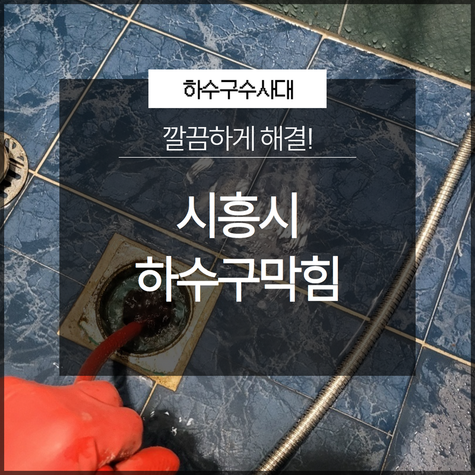
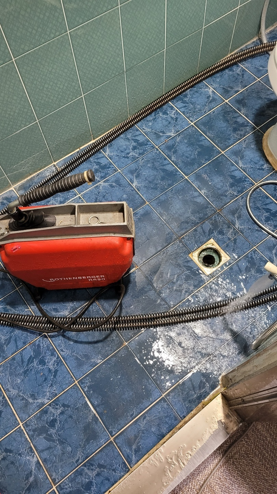
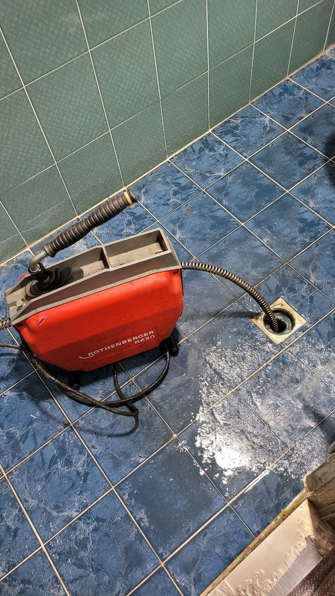

🏠 금천구 가산동변기역류 시흥동 하수구뚫어주는곳 배관막힘누수업체
시흥 변기막힘 전문 시공 후기

📋 작업 개요
- 위치: 시흥
- 서비스 유형: 변기막힘, 하수구막힘, 배관막힘, 누수수리, 역류해결, 뚫는업체
- 작업 일시: 2024. 12. 17. 11:16
- 업체명: 하수구수사대 (010-5615-2118)
🔍 문제 상황
안녕하세요 하수구수사대입니다!
하수구가 막히게 되면 역류로 인해 일상생활에 어려움을 겪습니다.
긴급하게 사용해야할 경우에는 더욱 불편해질 수 있는데요. 특히 변기 물이 역류하거나 하는 경우에는 더욱 문제가 발생될 수 있어 이번 하수구 막힘 작업과 같이 역류 현상은 오랜 시간 하수구를 사용하다 보면 몸에 있는 유분, 기름 등 다양한 물질들로 인해 막힘의 원인이 될 수 있답니다.
이번에 시흥시하수구막힘 배곧동 목감동 하수구역류해결 현장으로 빠르게 작업을 도와드리려 달려갔습니다. 막힘이 발생했다면 이미 오랜 시간부터 고착화되어 있다는 것을 말하는데요. 셀프만으로 해결이 되지 않는다면 전문가의 도움을 통해 작업을 받아보시는 것이 좋습니다.

🔎 원인 분석
💡 전문가 진단: 하수구가 막히게 되면 역류로 인해 일상생활에 어려움을 겪습니다.
역시나 이번 작업에서도 문의를 통해 현장에서 내시경 카메라를 통해 확인을 도와드렸습니다. 내용에서는 하수구가 내려가는 통로에서 고착 물이 붙어있어 굳은 상태임을 알 수 있었습니다. 이러한 이물질들은 분쇄 작업을 통해 제거를 해주어야 안전하게 작업을 마무리할 수 있습니다.
하수구에도 손상을 주지 않도록 샤프트 장비를 활용하여 스케일링 작업을 시행하도록 하였습니다. 시흥시하수구막힘 배곧동 목감동 하수구역류해결 작업에서는 역류하여 빠르게 물을 제거할 수 있도록 진행을 하게 되었는데요. 물이 역류하기 때문에 샤프트 기기로 작업을 하며 석회 분쇄를 통해 석션 흡입을 동시에 진행하게 되었습니다.
여기서 샤프트기를 꺼내면서 머리카락 채로 덩어리가 나오는 것을 볼 수 있었지만 석회까지 굳어 있는 모습들도 확인이 되었습니다. 또한 요즘 같은 시기에는 가정집에서나 매장 등 결빙으로 인해 더욱 막힘 현상이 생길 수 있어 이러한 시기에는 주의가 필요합니다. 내시경 카메라와 함께 샤프트 장비는 작업이 가능하기 때문에 눈으로 확인을 하면서 재발을 줄일 수 있도록 원인을 제거해 드리고 있습니다.
보통 이사를 처음 진행하게 되면서

🔧 작업 과정
깨끗한 상태에서 사용하기 때문에 막힘이 잘 형성되지 않아 깨끗하게 사용을 해보실 수 있는데요. 그만큼 재발을 줄일 수 있도록 깨끗한 상태로 만들어주는 것이 중요합니다. 샤프트 기기는 드릴과 함께 작업을 진행하고 있습니다. 보통 셀프 작업을 하시는 분들은 옷걸이 등을 이용하시는 경우가 많으신데요.
배관에서 손상을 입힐 수 있어 주의하여 진행을 해주어야 합니다.
노커체인과 같이 전문 장비는 스크래치를 주지 않아 이물질을 제거하고 뜯어내는데 안전한 작업이 가능합니다. 시흥시하수구막힘 배곧동 목감동 하수구역류해결에서도 배관 벽면에 우려가 있어 이물질을 스케일링 작업과 함께 재발을 줄일 수 있도록 분쇄된 석션 장비와 함께 조각나 있는 이물질들을 흡입해 드렸습니다.
물로 함께 내려보는 것이 아닌 밖으로 제거를 하기 때문에 배관 상태는 더욱 깨끗하게 만들어드렸는데요. 화장실에는 유분이나 석회 머리카락 등 다양하게 이물질들이 내려가는 구간이기 때문에 막힘을 방지하기 위해 사전 예방 이 중요하답니다.
배수구 위에도 이물질들이 쉽게 들어가지 못하게 만들어 드렸습니다.
테스트까지 고객님과 함께 확인한 이후 마무리를 도와드렸습니다. 이물질로 이해 잘 내려가지 않고 역류하는 현상을 해결해 드렸으며 주의해야 하는 점들까지 알려드리고 마무리를 하였습니다. 이번 작업 현장과 같이 일반 가정집에서 셀프로 진행을 하기 보다 전문 업체를 통해 연락을 주시는 것이 효율적이라고 말씀을 드릴 수 있습니다.


✅ 작업 완료
언제나 신속히 도움을 드리고 있으니
편히 연락 주시기를 바랍니다. 감사합니다.



⚠️ 베란다 누수 및 방수 관리 방법
- ✅ 비가 많이 올 때 창틀 주변이나 아래층 천장에 얼룩이 생기는지 정기적으로 확인해 보세요.
- ✅ 우수관 주변 실리콘 마감이 들뜨거나 깨진 틈새가 있는지 손상 여부를 수시로 체크하세요.
- ✅ 베란다 바닥 타일의 줄눈(메지)이 소실되면 그 틈으로 물이 침투하여 누수가 유발됩니다.
- ✅ 누수 의심 증상 발견 시 방치하면 아래층 손실이 커지므로 즉시 전문가의 진단을 받으십시오.
💡 핵심 정리
- 확실한 장비 작업(내시경 점검 및 샤프트 스케일링)으로 원인을 뿌리 뽑습니다.
- 작업 후 1년 이내에 동일한 부위 재발 시 100% 무상 A/S 서비스를 보장합니다.
- 서울 · 경기 · 인천 전 지역에 24시간 언제든 긴급 출동할 수 있도록 항시 대기 중입니다.
❓ 자주 묻는 질문 (FAQ)
🚨 시흥 변기막힘 문제로 고민이신가요?
정확한 원인 진단과 확실한 시공으로 재발 없는 해결을 약속드립니다.
24시간 긴급 출동 | 서울 · 경기 · 인천 전지역 | 1년 내 재발 시 무상 A/S